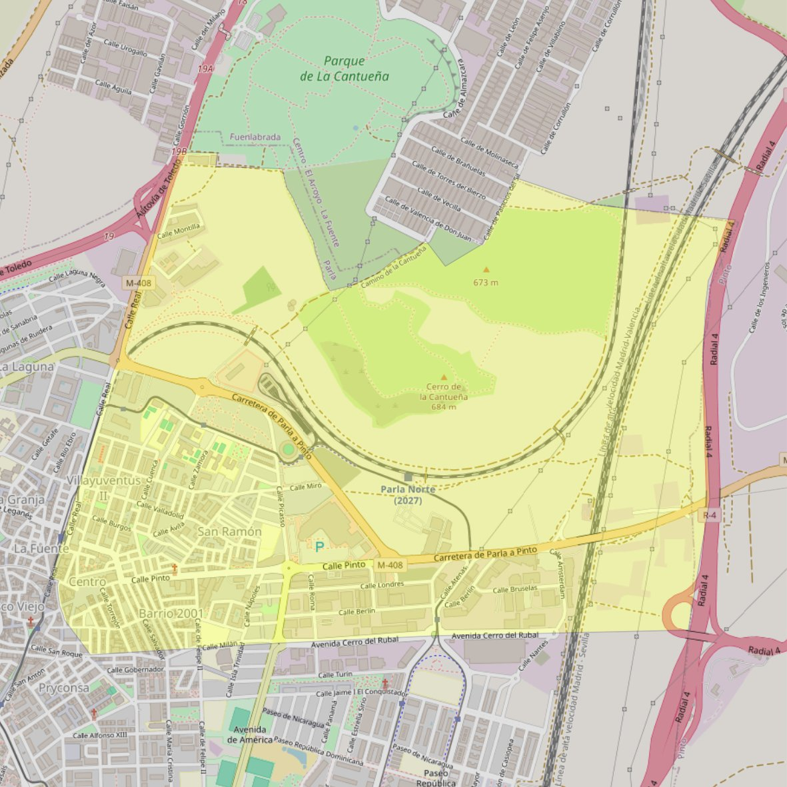

Nuestra Señora de la Paz

- Arciprestazgo
- Parla
- Población
- Parla
- Dirección postal
- c/ Pinto, 55
- Código postal
- 28982
- Extensión
- 4,63 km² (463 ha)
- Teléfono
- 916 833 107
- Correo electrónico
- parroquialapazparla@hotmail.com
Arciprestazgos y parroquias de la Diócesis de Getafe
